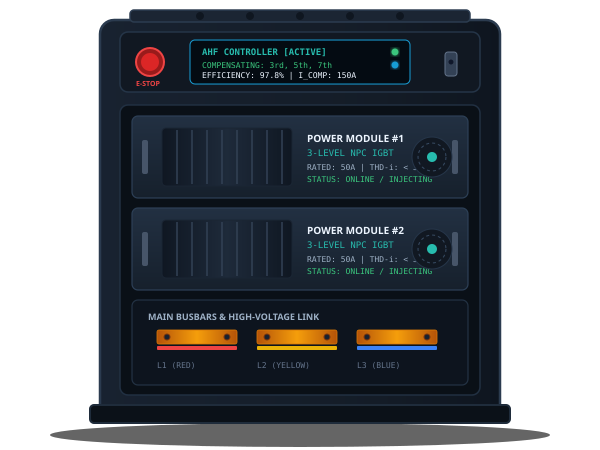

Active Filter

HARMONIC MITIGATION
Request an application review
Active harmonic filters
Assess dynamic load conditions, sizing basis, placement, monitoring requirements and limitations before selection.